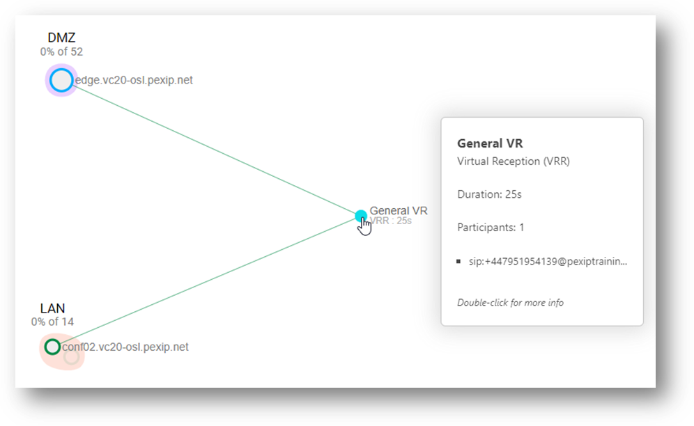
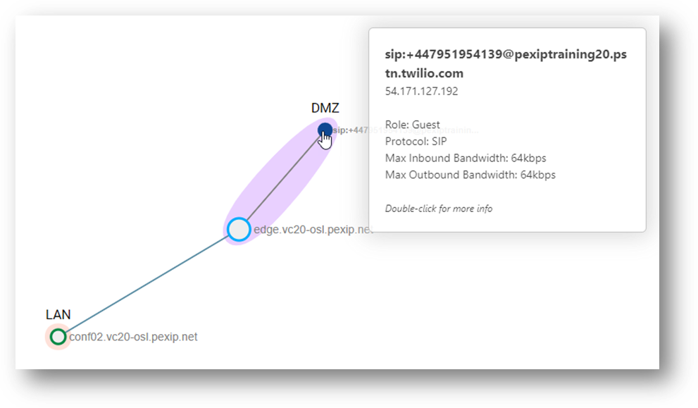
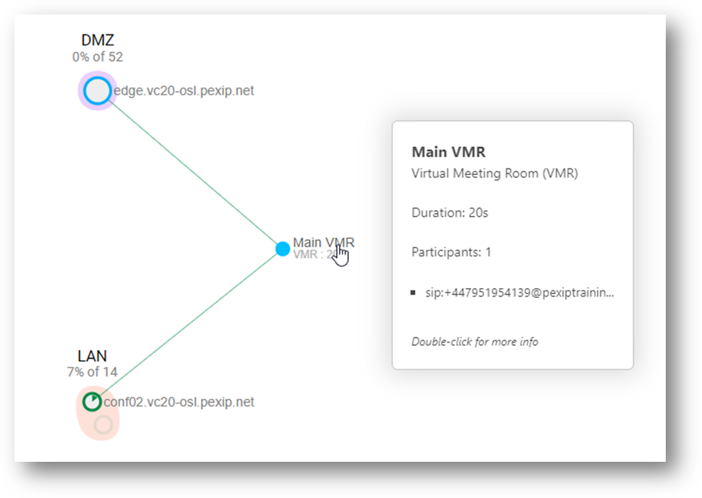
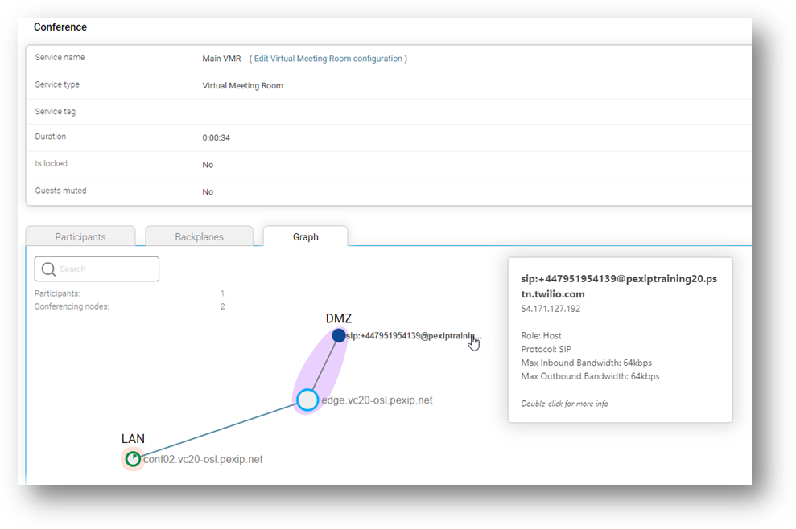

Suggested completion time: 30 minutes
Use section #5 of the lab sheet.
We have decided to give you no step-by-step instructions for this section! You are on your own but ensure you have checked the More Info button 😊. If you get stuck, help is probably close by.
PSTN stands for "Public Switched Telephone Network". In this task, you will be able to dial a regular phone number from your mobile phone that will route the call to your Infinity deployment. The idea is that this call will land in a Virtual Reception, and you will then be able to enter a numeric alias to be transferred into a VMR.
This task differs slightly from the instructions outlined in our documentation (see https://docs.pexip.com/admin/integrate_pstn.htm) as you will capture the alias of the dialled PSTN number. It allows us to explore how you could determine the correct alias from a SIP trunk that you cannot route to a statically defined VR alias through analysing the Administrator and Support logs.
Each trainee will have a SIP trunk pre-setup in Twilio, and different geographical PSTN numbers are associated with that SIP trunk. You should be able to dial the PSTN number for your geographical region, which will direct a call into your Infinity deployment. Your trainer will be able to give you the number you can dial for your system.
NOTE: THE INTEGRATION WILL NOT WORK IMMEDIATELY!
To determine the alias that needs to be set up for the VR, place a call to the number associated with your SIP trunk. You should do this without ANY modification to the configuration on your Infinity deployment! Initially, you will likely hear a voice message saying, “the phone numbers are not in use", or a busy signal, but this can vary by region and sometimes the call will simply disconnect.
You then need to check the Administrator and/or Support logs to see what alias Twilio has used when it sends the INVITE to Pexip. Pexip uses this header to match against a Conference Alias and form the basis of the alias you need to add to the VR.
Here are some examples of the Administrator and Support logs. In addition, we have highlighted some essential parts in each event that can help you determine what you might need to add as an alias to your VR.
As you anaylyse the logs, think about the alias that will need to be added to your VR.
2021-02-25T04:54:30.473+00:00 edge 2021-02-25 04:54:30,473 Level="INFO" Name="administrator.conference" Message="Participant attempting to join conference." ConferenceAlias="sips:+61288061210@91.90.42.120" Participant="sip:+447951954139@pexiptraining20.pstn.twilio.com" Protocol="SIP" Direction="in" Remote-address="54.252.254.64" Participant-id="3da94421-c6de-488d-b8f8-8f3bfadb4ca4" Registered="False" Location="DMZ"
2021-02-25T04:54:30.511+00:00 edge 2021-02-25 04:54:30,511 Level="WARNING" Name="administrator.conference" Message="Participant failed to join conference." ConferenceAlias="sips:+61288061210@91.90.42.120" Participant="sip:+447951954139@pexiptraining20.pstn.twilio.com" Protocol="SIP" Direction="in" Remote-address="54.252.254.64" Participant-id="3da94421-c6de-488d-b8f8-8f3bfadb4ca4" Location="DMZ" Reason="Neither conference nor gateway found"
2021-02-25T04:54:30.457+00:00 edge 2021-02-25 04:54:30,456 Level="INFO"
Name="support.sip" Message="Received SIP request" Src-address="54.252.254.64"
Src-port="40809" Dst-address="91.90.42.120" Dst-port="5061"
Transport="TLS" Received-time="2021-02-25T04:54:30,447596" Detail="
INVITE sips:+61288061210@91.90.42.120 SIP/2.0
Record-Route: <sip:54.252.254.64:5061;transport=tls;r2=on;lr>
Record-Route: <sip:54.252.254.64;r2=on;lr>
Max-Forwards: 28
To: <sips:+61288061210@91.90.42.120>
From:
<sip:+447951954139@pexiptraining20.pstn.twilio.com>;tag=37878786_6772d868_1b3c5cf9-8583-4e8b-9947-d41053ca1025
CSeq: 1013501 INVITE
Diversion: <sip:+61288061210@public-vip.au1.twilio.com>;reason=unconditional
Call-ID: b3bbfb57574d9acc5fa58facb74a387a@0.0.0.0
Via: SIP/2.0/TLS 54.252.254.64:5061;branch=z9hG4bK1c34.dc6554d6eb9d3d71e3f4f38313fdaf3d.0
Via: SIP/2.0/UDP
172.21.175.35:5060;rport=5060;branch=z9hG4bK1b3c5cf9-8583-4e8b-9947-d41053ca1025_6772d868_452-15114849142176759034
Contact: <sip:+447951954139@172.21.175.35:5060;transport=udp>
Allow: INVITE,ACK,CANCEL,BYE,REFER,OPTIONS,NOTIFY
User-Agent: Twilio Gateway
X-Twilio-AccountSid: AC4df8a8d1b862177d7f74b5d34343d541
Content-Type: application/sdp
X-Twilio-CallSid: CAe5170e12de8bc2020398c398ac12448c
Content-Length: 276
2021-02-25T04:54:30.473+00:00 edge 2021-02-25 04:54:30,473 Level="INFO" Name="administrator.conference" Message="Participant attempting to join conference." ConferenceAlias="sips:+61288061210@91.90.42.120" Participant="sip:+447951954139@pexiptraining20.pstn.twilio.com" Protocol="SIP" Direction="in" Remote-address="54.252.254.64" Participant-id="3da94421-c6de-488d-b8f8-8f3bfadb4ca4" Registered="False" Location="DMZ"
2021-02-25T04:54:30.489+00:00 edge 2021-02-25 04:54:30,489 Level="INFO" Name="support.conference" Message="Alias didn't match any Conference or Gateway rule" Protocol="sip" Alias="sips:+61288061210@91.90.42.120"
2021-02-25T04:54:30.511+00:00 edge 2021-02-25 04:54:30,511 Level="WARNING" Name="administrator.conference" Message="Participant failed to join conference." ConferenceAlias="sips:+61288061210@91.90.42.120" Participant="sip:+447951954139@pexiptraining20.pstn.twilio.com" Protocol="SIP" Direction="in" Remote-address="54.252.254.64" Participant-id="3da94421-c6de-488d-b8f8-8f3bfadb4ca4" Location="DMZ" Reason="Neither conference nor gateway found"
To ensure you have the PSTN integration working correctly, check your system against the screenshots below of Live View that show an incoming PSTN call into the VR. Further, check the Conference and Participant History that the call has been successfully transferred from the VR to the VMR. Lastly, remember to drill down into the gateway call instance in Live View to show the participant graph.



